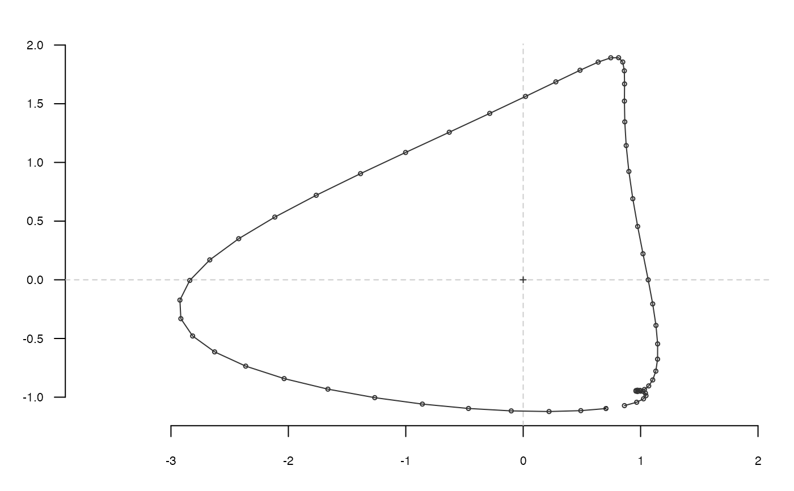
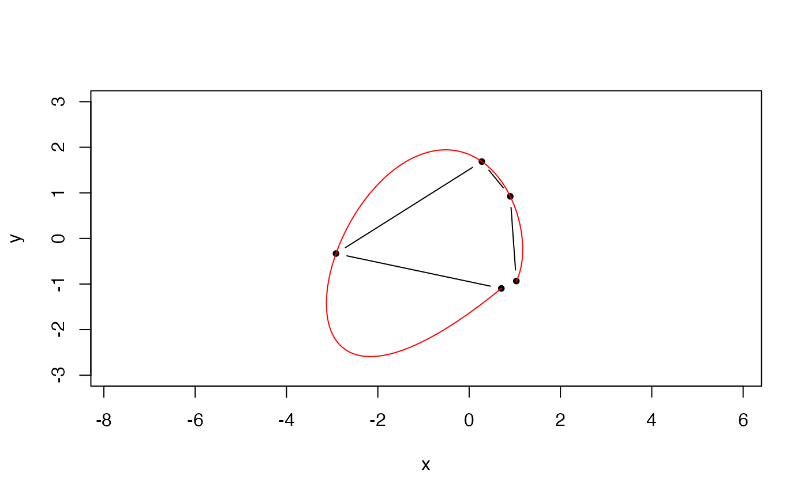

Calculates Bezier coefficients from a shape
bezier(coo, n)
| coo | a matrix or a list of (x; y) coordinates |
|---|---|
| n | the degree, by default the number of coordinates. |
a list with components:
$J matrix of Bezier coefficients
$B matrix of Bezier vertices.
Directly borrowed for Claude (2008), and also called bezier there.
Not implemented for open outlines but may be useful for other purposes.
Claude, J. (2008) Morphometrics with R, Use R! series, Springer 316 pp.
Other bezier functions: bezier_i
plot(x, ylim=c(-3, 3), asp=1, type='b', pch=20)